측량및지형공간정보산업기사 (2012-09-15 기출문제)
1과목: 응용측량
1. 곡선반지름이 500m인 원곡선을 70km/h로 주행하려면 캔트(Cant)는? (단, 궤간(b)은 1067mm이다.)
- 82.3mm
- 106.3mm
- 107.3mm
- 110.0mm
(정답률: 38%)

2. 노선측량에서 종단면도에 표기하는 사항이 아닌 것은?
- 측점의 계획단면적
- 측점간 수평거리
- 측점에서의 계획고
- 측점의 지반고
(정답률: 47%)
3. 심프슨 법칙에 대한 설명으로 옳지 않은 것은?
- 심프슨의 제1법칙은 경계선을 2차 포물선으로 보고, 지거의 두 구간을 한 조로 하여 면적을 계산한다.
- 심프슨의 제2법칙은 지거의 두 구간을 한 조로 하여 경계선을 3차 포물선으로 보고 면적을 계산한다.
- 심프슨의 제1법칙은 구간의 개수가 홀수인 경우 마지막 구간을 사다리꼴 공식으로 계산하여 더해 준다.
- 심프슨 법칙을 이용하는 경우, 지거 간격은 균등하게 하여야 한다.
(정답률: 알수없음)
4. 경관평가요인 중 일반적으로 시설물의 전체 형상을 인식할 수 있고 경관의 주제로서 적당한 수평시각(θ) 크기는?
- 0°≤θ≤10°
- 10°＜θ≤30°
- 30°＜θ≤60°
- 60°≤θ＜90°
(정답률: 84%)
5. 그림과 같이 교각 I=60°, 곡선 반지름 R=100m의 원곡선에서 제1접선
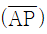
을 움직이지 아니하고 교점(P)를 중심으로 30° 만큼 더 회전하여 접선길이 와 곡선시점(A)을 같이 하는 새로운 원곡선의 반지름은?
와 곡선시점(A)을 같이 하는 새로운 원곡선의 반지름은?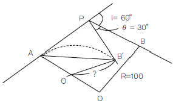
- 47.75m
- 57.74m
- 74.57m
- 77.45m
(정답률: 54%)
6. 부자에 의한 유속관측을 하고 있다. 부자를 띄운 뒤 1분후에 하류 120m 지점에서 관측되었다면 이 때의 표면유속은?
- 1m/sec
- 2m/sec
- 3m/sec
- 4m/sec
(정답률: 95%)
7. 터널측량을 실시할 때 작업순서로 옳은 것은?
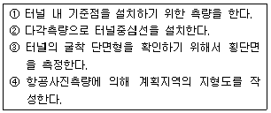
- ②→④→①→③
- ②→①→④→③
- ④→①→③→②
- ④→②→①→③
(정답률: 74%)
8. 그림과 같은 삼각형ABC의 면적이 80.0m2일 때, 삼각형 ABD의 면적을 50.0m2로 분할하려고 한다. BD의 거리는? (단, BC의 거리는 12.0m임)
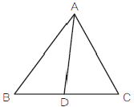
- 4.5m
- 4.8m
- 7.2m
- 7.5m
(정답률: 86%)
9. 자동차가 곡선구간을 주행할 때에는 뒷바퀴가 앞바퀴보다 곡선의 내측에 치우쳐서 통과하므로 차선폭을 증가시켜주는 확폭의 크기를 구하는 식은? (단, R:차량중심의 회전반지름, L:전후차륜거리)
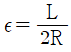
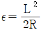
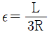
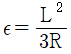
(정답률: 82%)
10. 그림과 같은 성토단면을 갖는 도로 50m를 건설하기 위한 성토량은? (단, 성토면의 높이(h)=3m)
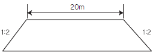
- 1,500m3
- 2,300m3
- 2,900m3
- 3,900m3
(정답률: 82%)
11. 교각 I=90°, 곡선반지름 R=300m인 원곡선을 설치하고자 할 때 장현에 대한 중앙종거(M)은?
- 512.132m
- 87.868m
- 22.836m
- 5.764m
(정답률: 75%)
12. 터널내 기준점측량에서 기준점을 보통 천정에 설치하는 이유로 가장 거리가 먼 것은?
- 운반이나 기타 작업에 장애가 되지 않게 하기 위하여
- 발견하기 쉽게 하기 위하여
- 파손될 염려가 적기 때문에
- 설치가 쉽기 때문에
(정답률: 84%)
13. 클로소이드에 대한 설명으로 옳지 않은 것은?
- 모든 클로소이드는 닮은 꼴이다. 즉, 클로소이드의 형은 하나밖에 없지만 매개변수를 바꾸면 크기가 다른 많은 클로소이드를 만들 수 있다.
- 클로소이드의 요소에는 길이의 단위를 가진 것과 단위가 없는 것이 있다.
- 클로소이드는 나선의 일종으로 곡률이 곡선의 길이에 비례한다.
- 클로소이드에 있어서 접선각(τ)를 라디안으로 표시하면 곡선장(L)과 반지름(R) 사이에는 τ = L/3R인 관계가 있다.
(정답률: 92%)
14. 지구에 연직방향인 A, B 2개의 수직 터널에 의해서 터널 내외를 연결하는 경우, 터널 외에서 수직 터널간의 거리가 400m일 때, 수직 터널 깊이가 500m라면 터널내에서의 두 수직 터널간 거리는? (단, 지구는 반지름 6370km의 구로 가정한다.)
- 399.969m
- 399.992m
- 400.008m
- 400.031m
(정답률: 25%)
15. 그림은 축척 1/400로 측량하여 얻은 결과이다. 실제의 면적은?
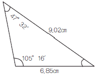
- 225.94m2
- 275.34m2
- 325.62m2
- 402.02m2
(정답률: 73%)
16. 교각 I=60°, 곡선반지름 R-80m인 단곡선의 교점(I.P)의 추가거리가 1152.52m일 때 곡선의 종점(E.C)의 추가거리는?
- 750.35m
- 1,106.34m
- 1,190.11m
- 1,415.34m
(정답률: 알수없음)
17. 하천의 유속측정에 있어서 최소유속, 최대유속, 평균유속, 표면유속의 4가지 유속은 크기가 다르게 나타난다. 이 4가지 유속을 하천의 표면에서부터 하저에 이르기까지 일반적으로 나타나는 순서대로 옳게 열거한 것은?
- 표면유속-최대유속-최소유속-평균유속
- 표면유속-평균유속-최대유속-최소유속
- 표면유속-최대유속-평균유속-최소유속
- 표면유속-최소유속-평균유속-최대유속
(정답률: 77%)
18. 트래버스측량을 통한 면적 계산에서 배횡거(倍橫距)에 대한 설명으로 옳은 것은?
- 하나 앞 측선의 배횡거에 그 변의 위거를 더한 값이다.
- 하나 앞 측선의 배횡거에 그 변의 경거를 더한 갚이다.
- 하나 앞 측선의 배횡거에 그 변과 하나 앞 측선의 경거를 더한 값이다.
- 하나 앞 측선의 배횡거에 그 변의 위거와 경거를 더한 값이다.
(정답률: 67%)
19. 그림은 어느 하천의 횡단면도이다. 계획고에서의 유량을 152m3/sec, 단면적(a) 및 (b)의 평균유속을 각각 Va=2.0m/sec, Vb=1.0m/sec라고 한다. 이때 하천의 밑바닥으로부터 계획고 수위까지의 높이(H)는? (단, 횡단면도의 사면 경사는 1:2, 하상은 수평이다. )
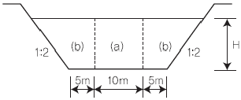
- 4m
- 5m
- 6m
- 8m
(정답률: 19%)
20. 지표에 설치된 중심선을 기준으로 하여, 터널 입구에서 굴착을 시작하고, 굴착이 진행됨에 따라 터널 내의 중심선을 설정하는 작업은?
- 조사
- 예측
- 지하설치
- 지표설치
(정답률: 90%)
2과목: 사진측량 및 원격탐사
21. 사진측량의 특성에 관한 설명으로 옳지 않은 것은?
- 축척의 변경이 용이하다.
- 분업화에 의해 능률이 높다.
- 넓지 않은 구역에서의 측량에 적합하다.
- 접근하기 어려운 대상물을 측량할 수 있다.
(정답률: 84%)
22. 우리나라에서 개발된 위성 중에서 다목적 실용위성으로 해양관측, 지도제작 등의 지구관측을 주목적으로 하는 것은?
- 아리랑위성(KOMPSAT)
- 무궁화위성(KOREASAT)
- 우리별위성(KITSAT)
- 과학기술위성(STSAT)
(정답률: 69%)
23. 원격탐사 데이터 처리 중 전처리 과정에 해당되는 것은?
- 기하보정
- 영상분류
- DEM생성
- 영상지도 제작
(정답률: 82%)
24. 항공사진의 촬영계획시 종중복도와 횡중복도의 목적에 대한 설명으로 옳은 것은?
- 종중복도는 코스간 접합을 하기 위함이고, 횡중복도는 입체시를 얻기 위함이다.
- 종중복도는 코스 간 접합을 하기 위함이고, 횡중복도는 스트립을 얻기 위함이다.
- 종중복도는 입체시를 얻기 위함이고, 횡중복도는 코스간 접합을 하기 위함이다.
- 종중복도는 입체시를 얻기 위함이고, 횡중복도는 스트립을 얻기 위함이다.
(정답률: 29%)
25. 다음과 같은 3×3 크기의 수치영상에 중앙값필터를 적용할 경우 정 중앙 픽셀에 할당될 값은?
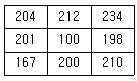
- 100
- 167
- 201
- 212
(정답률: 90%)
26. 어떤 지상물체의 분광반사율이 57%라고 가정할 때 임의의 전자기복사에너지 파장대에서 그 지상물체에서 반사되는 복사에너지 파장대에서 그 지상물체에서 반사되는 복사에너지 15.3Wm-2sr-1이었다면 이 지상물체로 입사되는 총 복사에너지는?
- 18.2Wm-2sr-1
- 19.2Wm-2sr-1
- 25.8Wm-2sr-1
- 26.8Wm-2sr-1
(정답률: 25%)
27. 사진좌표를 결정하기 위해 사용하는 좌표변환식에 포함되지 않은 미지변수는?
- 사진의 축척
- 사진의 회전각
- 렌즈의 왜곡량
- 좌표원점의 이동량
(정답률: 62%)
28. 영상재배열에 대한 설명으로 옳은 것은?
- 노이즈 제거를 목적으로 한다.
- 주로 영상의 기하보정 과정에 적용된다.
- 토지피복 분류시 무감독 분류에 주로 활용된다.
- 영상의 분광적 차를 강조하여 식별을 용이하게 해준다.
(정답률: 42%)
29. 사진측량의 촬영방향에 의한 분류에 대한 설명으로 옳지 않은 것은?
- 수직사진-광축이 연직선과 일치하도록 공중에서 촬영한 사진
- 수렴사진-광축이 서로 평행하게 촬영한 사진
- 수평사진-광축이 수평선과 거의 일치하도록 지상에서 촬영한 사진
- 경사사진-광축이 연직선과 경사지도록 공중에서 촬영한 사진
(정답률: 90%)
30. 표정점을 선점할 때의 유의사항으로 옳은 것은?
- 측선을 연장한 가상점을 선택하여야 한다.
- 시간적으로 일정하게 변하는 점을 선택하여야 한다.
- 원판의 가장자리로부터 1cm 이내에 나타나는 점을 선택하여야 한다.
- 표정점은 X, Y, H가 동시에 정확하게 결정될 수 있는 점을 선택하여야 한다.
(정답률: 69%)
31. 항공사진에서 발생하는 현상이 아닌 것은?
- 기복변위
- 과고감
- Image motion
- 주파수 단절
(정답률: 70%)
32. .다음 중 기상조건에 관계없이 데이터 획득이 가능한 전천후 센서는?
- 레이더 센서
- 다중분광 센서
- 고해상도 광학센서
- 측량용 항공사진기
(정답률: 85%)
33. .다음중 넓은지역에 대한 수치표고모델(DEM)를 가장 신속하게 얻을 수 있는 장비는?
- GPS
- LIDAR
- 항공사진기
- 토탈스테이션
(정답률: 69%)
34. 지상고도 2000m의 비행기에서 초점거리 142mm의 사진기로 촬영한 수직항공사진 상에서 길이 30m 교량의 길이는?
- 2.13mm
- 2.26mm
- 2.35mm
- 2.37mm
(정답률: 65%)
35. 평탄지에서 축척 1:20,000, 초점거리 15cm로 찍은 사진에서 주점기선이 100mm이었다면, 비고40m에 대한 시차차는?
- 1.18mm
- 1.23mm
- 1.28mm
- 1.33mm
(정답률: 42%)
36. 초점거리 15cm, 사진크기 23cm×23cm인 카메라로 촬영고도 3000m에서 종중복도 60%로 찍은 연직사진의 촬영종기선장은?
- 1540m
- 1640m
- 1,40m
- 1840m
(정답률: 50%)
37. 기계적 상호표정의 인자는 몇 개인가?
- 3개
- 5개
- 7개
- 9개
(정답률: 82%)
38. .입체상의 변화에 대한 설명으로 틀린 것은?
- 입체상은 촬영기선이 긴 경우가 촬영기선이 짧은 경우보다 더 높게 보인다.
- 렌즈의초점거리가 긴 사진이 짧은 사진보다 더 높게 보인다.
- 같은 사진기로 촬영고도를 변경하며 같은 촬영기선에서 촬영할 때 낮은 촬영고도로 촬영한 사진이 촬영고도가 높은 경우보다 더 높게 보인다.
- 눈의 위치가 높아질수록 입체상은 더 높게 보인다.
(정답률: 알수없음)
39. 거의 평탄한 지역에 대한 소축척 지도제작을 위하여 항공사진 촬영을 하고자 할 때 적합한 카메라는?
- 보통각 카메라
- 광각 카메라
- 초광각 카메라
- 다파장대 카메라
(정답률: 67%)
40. 다음()에 알맞은 용어로 가장 적합한 것은?
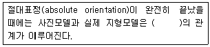
- 상사(相似)
- 이동(異動)
- 평행(平行)
- 일치(一致)
(정답률: 74%)
3과목: GIS 및 GPS
41. GPS측량의 체계구성을 크게 3가지로 나눌 때 해당되지 않는 것은?
- 사용자부분
- 우주부분
- 제어부분
- 신호부분
(정답률: 55%)
42. 다중분광 수치영상자료의 저장 형식 중 하나로써 밴드별로 따로 관리할 수도 있고 모든 밴드를 순차적으로 저장하여 하나의 파일로 통합 관리할 수도 있는 저장방식으로 최근 대부분의 수치영상 자료의 저장에 이용하고 있는 저장방식은?
- BIL(Band Inter leaved by Line)
- BSQ(Band Sequential)
- BIP(Band Inter leaved pixel)
- BSP((Band Separately)
(정답률: 91%)
43. 우리나라 측지좌표 결정에 사용되고 있는 지구타원체는?
- Airy 타원체
- GRS80 타원체
- Hayford 타원체
- WGS84 타원체
(정답률: 69%)
44. GIS 데이터베이스의 오차 중에서 자료를 처리하는 과정에서 발생하는 오차가 아닌 것은?
- 지리오차
- 입력오차
- 편집오차
- 분석오차
(정답률: 39%)
45. 지적도(parcels)에서 면적(area)이 100m2 이상인 대지를 소유한 소유자의 주소(address)를 알고싶을 때, SQL 질의문으로 옳은 것은?
- SELECT address FROM parcels WHERE area GT 100m2
- SELECT parcels FROM address WHERE area GT 100m2
- SELECT area GT 100m2FROM address WHERE parcels
- SELECT address FROM rea GT 100m2WHERE parcels
(정답률: 58%)
46. 우리나라에서 용도지역지구의 관리를 포함한 도시계획업무를 지원하고 도시계획관련 각종 의사결정을 지원해주는 국가공간정보 응용 정보시스템은?
- 온나라
- LMIS
- UPIS
- KOPSS
(정답률: 46%)
47. 정밀측지를 위하여 GPS측량을 이용하고자 할 때 가장 부적합한 방법은?
- 반송파 위상관측
- 동시에 4개 이상의 위성신호수신과 위성의 양호한 기하하적 배치상태를 고려한 관측
- 상대측위에 의한 관측
- 코드 측정방식에 의한 절대관측
(정답률: 50%)
48. 공간분석에 대한 설명으로 옳지 않은 것은?
- 지리적 현상을 설명하기 위하여 조사하고 질의하고 검사하고 실험하는 것이다.
- 속성을 표현하기 위한 탐색적 시작 도구로는 박스플롯, 히스토그램, 산포도 그리고 파이차트 등이 있다.
- 중첩분석은 새로운 공간적 경계들을 구성하기 위해서 두 개나 그 이상의 공간적 정보를 통합하는 과정이다.
- 공간분석에서 통계적 기법은 속성에만 적용된다.
(정답률: 64%)
49. GIS에서 사용하고 있는 공간데이터를 설명하는 기능을 가지며 데이터의 생산자, 좌표계 등 다양한 정보를 담을 수 있는 것은 무엇인가?
- Data Dictionary
- Metadata
- Extensible Markup Language
- Geospatial Data Abstraction Library
(정답률: 92%)
50. AB 직선의 길이가 10km일 때 이 직선으로부터 1km의 버퍼링 분석을 실시하고자 할 때 생성되는 폴리곤의 면적은 몇 km2 인가?
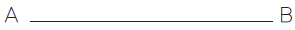
- 10 + π
- 20
- 20 + π
- 20 + 2π
(정답률: 43%)
51. GPS 수신기에 의해 직접적으로 구해지는 높이 값은?
- 지오이드고
- 정표고
- 역표고
- 타원체고
(정답률: 60%)
52. 지리정보시스템의 주요기능으로 거리가 먼 것은?
- 출력(output)
- 자료입력(input)
- 검수(quality check)
- 자료 처리 및 분석(analysis)
(정답률: 56%)
53. GIS에서 사용하는 수치지도를 제작하는 방법이 아닌 것은?
- 항공기를 이용하여 항공사진을 촬영하여 수치지도를 만드는 방법
- 항공사진 필름을 고감도 복사기로 인쇄하는 방법
- 인공위성데이터를 이용하여 수치지도를 만드는 방법
- 종이지도를 디지타이징하여 수치지도를 만드는 방법
(정답률: 50%)
54. 실세계의 현상들을 보다 정확히 묘사할 수 있으며 자료의 갱신이 용이한 자료관리체계는?
- 관계지향형 DBMS
- 종속지향형 DBMS
- 객체지향형 DBMS
- 관망지향형 DBMS
(정답률: 78%)
55. 지리정보체계의 구축 시 실세계의 참값과 구축된 시스템의 값을 비교분석하고 카파계수를 계산함으로써 오차의 정도를 알아내는 방법은?
- 오차행렬
- 카파행렬
- 표본행렬
- 검증행렬
(정답률: 34%)
56. 부영상소 보간방법 중 출력영상의 각 격자점(x, y)에 해당하는 밝기를 입력영상좌표계의 대응점(x, y)주변의 4개 점간 거리에 따라 영상소의 경중률을 고려하여 보간 계산하는 방법은?
- nearest-neighbor interpolation
- bilinear interpolation
- bicubic convolution interpolation
- kriging interpolation
(정답률: 73%)
57. 자료의 수집 및 취득시 지형공간정보체계를 이용함으로써 기대할 수 있는 효과에 대한 설명으로 거리가 먼 것은?
- 투자 및 조사의 중복을 최소화 할 수 있다.
- 분업과 합작을 통하여 자료의 수치화 작업을 용이하게 해준다.
- 상호 간의 자료 공유와 입수가 쉽지 않으므로 보안성이 좋아진다.
- 자료기반과 전산망 체계를 통하여 자료를 더욱 간편하게 사용하게 한다.
(정답률: 100%)
58. GIS의 필수 구성요소가 아닌 것은?
- 지리정보 데이터베이스
- 하드웨어와 소프트웨어
- 운영위원
- 무선 인터넷
(정답률: 70%)
59. GPS에 의한 위치관측법에서 상대관측방법에 대한 설명으로 옳지 않은 것은?
- 4개 이상의 위성에서 수신한 신호 가운데 C/A code를 이용하여 실시간처리로 수신기의 위치를 관측하는 정지식 방법
- 기지점에 1대의 수신기를 설치하여 고정국으로 정한 다음, 다른 수신기를 이용하면서 최소 4개 이상의 위성신호를 수신하여 이동지점의 위치를 관측하는 이동식 GPS방법
- 정확히 알고 있는 좌표지점에 기지국용 GPS 수신기를 설치하고 위성을 관측하여 각 위 성의 의사거리 보정값을 구하여 이동국용 GPS수신기 위치결정 오차를 개선하는 사용자 중심의 위치관측인 정밀GPS방법
- 이동식 GPS에서 기지국 GPS로 GPS 관측자료를 송신하여 이동국 GPS의 정확한 위치관측 및 위치변화량의 관측을 위하여 사용되는 관리자 중심의 위치 관측인 역정밀GPS방법
(정답률: 알수없음)
60. 래스터 구조 데이터에 대한 설명으로 옳지 않은 것은?
- 원격탐사 자료와의 연계처리가 용이하다.
- 좌표변환과 같은 데이터 변환에 있어 많은 시간이 소요된다.
- 여러 레이어의 중첩이나 분석이 용이하다.
- 위상에 관한 정보가 제공되어 관망분석과 같은 공간분석이 가능하다.
(정답률: 69%)
4과목: 측량학
61. 직사각형의 2변을 관측한 결과가 각각15m±2.5mm, 30m±3.5mm 이었다면 면적에 대한 표준오차는?
- ±0.092m2
- ±0.172m2
- ±01.⑤2m2
- ±1.072m2
(정답률: 30%)
62. 비교적 폭이 좁고 거리가 긴 지역에 적합하여 하천측량, 노선측량, 터널측량등에 이용된는 삼각망은?
- 단열삼각망
- 유심다각망
- 사변형망
- 격자삼각망
(정답률: 70%)
63. 레벨의 요구 조건 중 가장 기본적인 요소로 레벨 조정의 항정법에 의하여 조정되는 것은?
- 연직축과 기포관축이 직교할 것
- 기포관축과 망원경의 시준선이 평행할 것
- 독취시에 기포의 위치를 볼 수 있을 것
- 망원경의 배율과 수준기의 감도가 평형할 것
(정답률: 50%)
64. 다각측량에서는 거리와 각도의 관측정확도가 서로 부합하는 것이 바람직하다. 거리의 정확도를 1/3,500 으로 한 경우, 각의 허용 오차는?
- 약 40“
- 약 49“
- 약 50“
- 약 59“
(정답률: 알수없음)
65. 지형의 표시방법을 자연적 도법과 부호적 도법으로 구분할 때 자연적 도법에 해당되는 것은?
- 등고선법
- 단채법
- 점고법
- 영선법
(정답률: 65%)
66. 교호 수준측량에 관한 설명으로 옳지 않은 것은?
- 교호 수준측량은 하천, 계곡 등이 있어 중간 지점에 레벨을 새울 수 없을 경우 실시한다.
- 교호 수준측량에 사용되는 기계는 레벨과 수준척(표척)이다.
- 교호 수준측량은 정밀수준측량에서는 실시할 수 없다.
- 교호 수준측량은 표척의 시준거리를 같게 설치한다.
(정답률: 80%)
67. 삼변측량에 관한 설명 중 옳지 않은 것은?
- 삼변측량 시 cosine 제2법칙, 반각공식을 이용하면 변으로부터 각을 구할 수 있다.
- 삼변측량의 정확도는 삼변망이 정오각형 또는 정육각형의 도형을 이루었을 때 가장 이상적이다.
- 삼변측량에서 관측대상이 변의 길이이므로 삼각형의 내각의 크기가 10° 이하인 경우에도 매우 유용하다.
- 삼변측량 시 관측점에서 가능한 모든 점에 대한 변관측으로 조건식 수를 증가시키면 정확도를 향상시킬 수 있다.
(정답률: 75%)
68. 축척 1:10,000인 지형도의 주곡선의 간격과 1:25000의 지형도의 간곡선의 간격으로 올바르게 짝지어진 것은?
- 10m,10m
- 10m,5m
- 5m,10m
- 5m,5m
(정답률: 62%)
69. 50m의 줄자로 거리를 측정할 때 ±2mm의 부정 오차가 생긴다면 이 줄자로 100m를 관측할 때 생기는 부정오차는?
- ±4.0mm
- ±2.8mm
- ±2.0mm
- ±1.4mm
(정답률: 54%)
70. 직접수준측량에 있어서 전시와 후시의 시준거리를 같게 하는 이유로 거리가 먼 것은?
- 시준선이 기포관축과 평행하지 않을 경우의 오차가 소거된다.
- 시차에 의한 오차가 소거된다.
- 지구의 곡률오차가 소거된다.
- 빛의 굴정오차가 소거된다.
(정답률: 54%)
71. 양차가 0.03m로 되도록 하기 위한 최대 수평거리는 약 얼마인가? (단, K=0.14 R=6370km)
- 637m
- 667m
- 697m
- 727m
(정답률: 40%)
72. 측량 시 발생하는 오차의 종류로 수학적, 물리적인 법칙에 따라 일정하게 발생되는 오차는?
- 정오차
- 참오차
- 과대오차
- 우연오차
(정답률: 80%)
73. 토털스테이션의 일반적인 기능이 아닌 것은?
- EDM이 가지고 있는 거리 측정 기능
- 각과 거리 측정에 의한 좌표계산 기능
- 3차원 형상을 스캔하여 체적을 구하는 기능
- 디지털 데오도라이트가 갖고 있는 측각 기능
(정답률: 85%)
74. 지구표면에서 반지름 50km까지를 평면으로 간주한다면 거리의 허용정밀도는 약 얼마인가? (단, 지구 반지름은 6400km이다. )
- 1/100000
- 1/30000
- 1/50000
- 1/70000
(정답률: 60%)
75. 토털 스테이션에 대한 성능검사의 주기로 옳은 것은?
- 3년에2회
- 2년
- 5년에2회
- 3년
(정답률: 77%)
76. 공공측량의 기준에 대한 설명으로 옳은 것은?
- 기본측량 성과나 다른 공공측량 성과를 기초로 실시하여야 한다.
- 일반측량의 성과를 기초로 실시하여야 한다.
- 일반측량 성과나 기본측량 성과를 기초로 실시하여야 한다.
- 일반측량 성과나 공공측량 성과를 기초로 실시하여야 한다.
(정답률: 69%)
77. 측량, 수로조사 및 지적에 관한 법률에서 사용하는 용어의 정의로 잘못된 것은?
- 측량이란 공간상에 존재하는 일정한 점들의 위치를 측정하고 그 특성을 조사하여 도면 및 수치로 표현하거나 도면상의 위치를 현지에 재현하는 것을 말한다.
- 기본측량이란 모든 측량의 기초가 되는 공간정보를 제공하기 위하여 국토해양부장관이 실시하는 측량을 말한다.
- 측량기록이란 측량성과를 얻을 때까지의 측량에 관한 작업의 기록을 말한다.
- 일반측량이란 기본측량,공공측량을 제외한 지적측량 및 수로측량을 말한다.
(정답률: 알수없음)
78. 국토해양부장관은 측량기본계획을 몇 년마다 수립하여야 하는가?
- 2년
- 3년
- 4년
- 5년
(정답률: 79%)
79. 측량성과 심사수탁기관이 행하는 지도 등의 심사 사항이 아닌 것은?
- 도곽설정,축척 및 투영
- 측량업용 시설 및 장비
- 난외표시
- 주기 및 기호 표시
(정답률: 75%)
80. 측량업 등록을 취소할 수 있는 사유에 해당되지 않는 것은?
- 고의 또는 과실로 측량을 부정확하게 한 경우
- 거짓이나 그 밖의 부정한 방법으로 측량업의 등록을 한 경우
- 정당한 사유 없이 측량업의 등록을 한 날부터 6개월 이내에 영업을 시작하지 아니한 경우
- 다른 행정기관이 관계 법량에 따라 등록취소를 요구한 경우
(정답률: 74%)
캔트 = (V² / (127R + b)) x 1000
여기서 V는 속도, R은 곡선의 반지름, b는 궤간의 너비를 나타낸다.
따라서, 주어진 문제에서 캔트를 계산하면 다음과 같다.
캔트 = (70² / (127 x 500 + 1067)) x 1000
= 82.3mm
따라서, 정답은 "82.3mm"이다.